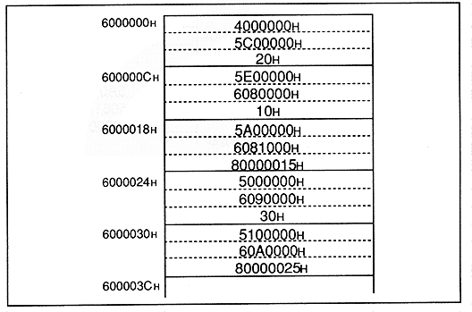

(5) Set the DMA enable bit to 1 and the activation factor set in (4) is generated. (A) to (c) until DMA is activated and a DMA end code is detected DMA transfer is executed in order. The DMA end code is a DMA indirect mode that exists only in the work RAM area. The DMA transfer will continue unless this bit “1” is detected in the end notification code. It will be done.
However, (1) to (4) can be in any order. The “Read Address Register (D0R)” and “Transfer Byte Count Register (D0C)” that had to be set in the direct mode do not need to be set in the indirect mode.
Suppose that the following DMA transfer has been registered in the memory.
(d) DMA transfer of 30HByte from 5000000H to 6090000H. (e) 25HByte DMA transfer from 5100000H to 60A0000H.
Figure 2.9 Contents of work RAM area
